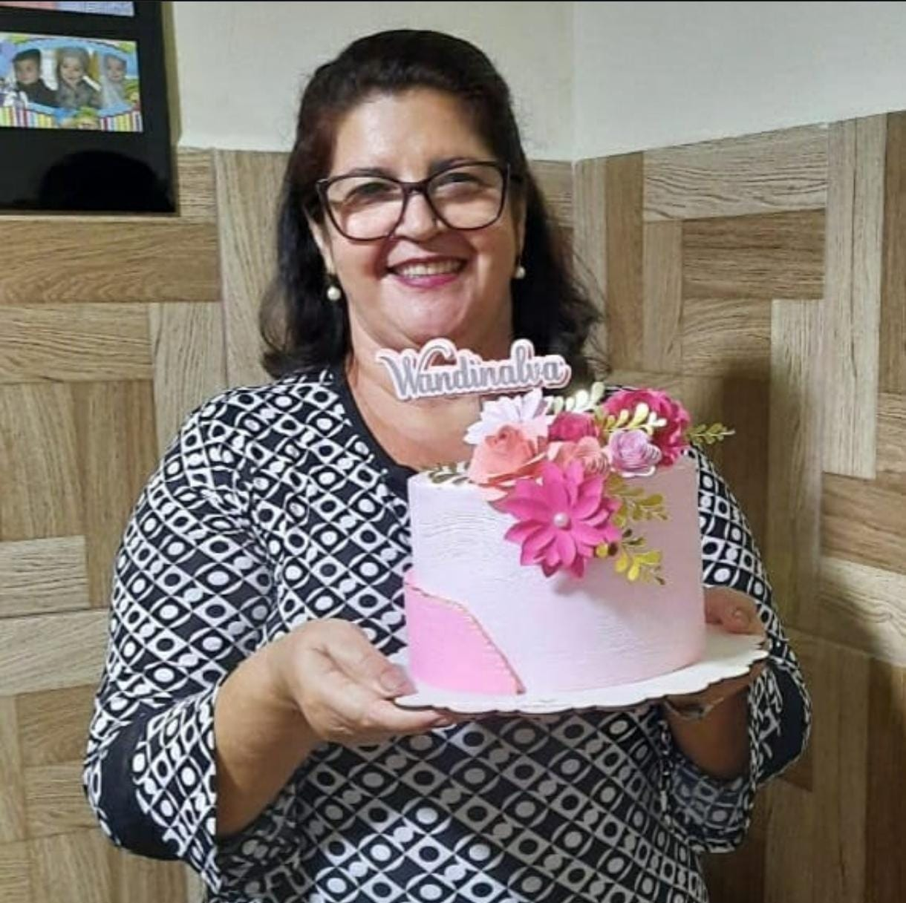

Um Pouco Sobre Vovó Nalva
"Vovó Nalva sempre foi apaixonada por confeitaria. Desde jovem, ela preparava doces para amigos e familiares, conquistando todos com seus bolos e tortas recheados de carinho. Com o passar dos anos, ela aperfeiçoou suas receitas, transformando a paixão em uma verdadeira tradição familiar. Hoje, suas delícias são conhecidas em toda a cidade, e sua dedicação em manter o sabor de casa em cada receita é o segredo do sucesso da nossa confeitaria."